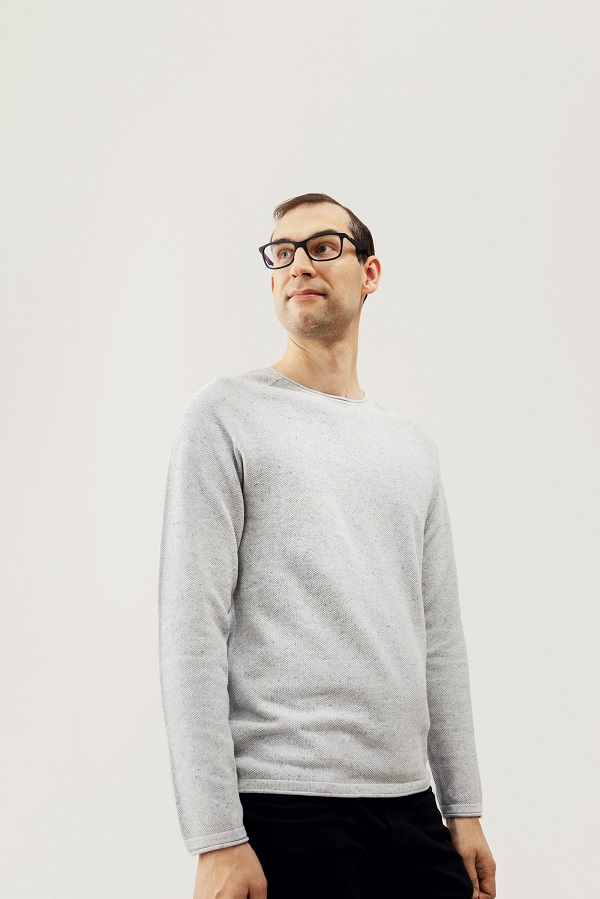
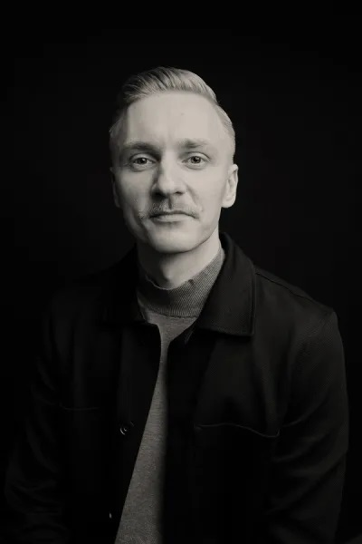

8-bit-sheep
“I’m a humanist that dreams of 8-bit sheep.”
That's how Sami Kallinen, the co-founder of 8-bit-sheep, introduced himself on Twitter for many years. The company name refers to Philip K. Dick's classic sci-fi novel Do Androids Dream of Electric Sheep and the necessary combination of arts and technology.
Digital and Data Strategy Boutique
This sheep means business
AI. Architecting systems. Auditing business needs. Auditing ecosystems. Building teams. Buyer side consulting. Coaching. Community building. Coordinating complex multi-stakeholder initiatives. Customer analytics. Customer Data Platform design. Customer experience measurement. Customer insight collection. Customer insights and analytics. CX analysis. CX optimization. Data Engineering. Data Science. Data visualisation. Digital analytics system evaluations. Digital analytics system implementation. Digital development. Digital experience optimization. Digital experience personalization. Digital strategy creation. Facilitation. Identity solutions. Internal capability development. Keynote speakers. Leadership. Machine Learning. Management. Marketing Technology & Digital Data. Mentoring. Product and project management. Reporting technologies. Research. Roadmap design. Software Engineering. Sparring. Technical management mentoring. Tender preparation. Training and coaching. User research. Vendor selection. Workshop design.
Competence
We do consulting for strong brands
Competence
We help with problems regarding the digital in general and data in particular
User experience, data and analytics
Competence
These clever little lambs…
…all senior and acclaimed in their fields, work on the most difficult problems in the space
We help clients make sense of all the buzzwords
Data science, machine learning, AI, vim, emacs or blockchains
Competence
We've seen things few people would've believed
The media industry was just the start, you're probably next
We can help you dream of 8-bit-sheep
The Sheep

Sami
Kallinen
Kallinen
The Company Bellwether
Leevi
Kokko
Kokko
Senior Baartner

Jaakko
Ojalehto
Ojalehto
Full Stack Baad-ass
Henri
Kinnunen
Kinnunen
Front and Bääkend Ram

Simo
Ahava
Ahava
Sheep Analytics Officer
Teemu
Keskitalo
Keskitalo
Full Stack GraphQL Evangelist

Taneli
Salonen
Salonen
Wool Stack Measurement Specialist
Anders
Nylund
Nylund
Full Stack Web Develobaa
Erik
Grönroos
Grönroos
Sheep Analytics & AI Engineer
Mark
Edmondson
Edmondson
Princibaal Data Engineer
Hanne
Kettunen
Kettunen
Shepherd, Senior Advisor
Mary
Gestrin
Gestrin
Shepherd, Senior Advisor
Piëtke
Visser
Visser
Shepherd, Senior Advisor
The Sheep
Sami Kallinen // @sakalli
The Company Bellwether
The Sheep
Leevi Kokko // @leevikokko
Senior Baartner
Leevi has been online for the past 20 years, always driving change, whether on the client side or as a consultant. Leevi likes to help brands understand customers on all levels, utilizing methods from market intelligence, surveys and focus groups to analysis of digital data in all its forms.
During the past couple of years, Leevi has been one of the driving forces behind the national identity project, orchestrated by the Suomen Tunnistautumisosuuskunta co-operative. Additionally Leevi is currently leading the national online media measurement (FIAM) operations, and engaged in multiple cross-channel audience measurement initiatives within the media industry.
Leevi began his career at Sonera, moved on to Satama Interactive and from there to start Finland's first service design agency Ego Beta. He joined e-commerce startup Fruugo as business analytics manager and later Fonecta as the marketing manager for digital services. At Yle Leevi built digital analytics practice from ground up, and started Yle Tunnus. Before joining 8-bit-sheep as a partner Leevi spent two years at DNA where he lead the B2C commercial operations team within the Online unit.
The Sheep
Jaakko Ojalehto // @zeikko
Full Stack Baad-ass
Jaakko is a full-stack developer who enjoys making the world a better place by creating the tools that enable people to level up their lives. This has included web analytics tools for journalists, visually stunning news websites for young adults and a news mobile application where you can converse and vote for things that matter. Jaakko goes nuts over test automation, code coverage, code linting, code reviews, continuous integration, infrastructure as code and other ways to build high performance quality apps that are easy to maintain and develop further.
Jaakko built his first commercial website in the age of 15, since then he has been on a ride that took him to master HTML, CSS, SQL, JavaScript, PHP and more. He got into the world of web analytics, social media, search engine optimization and marketing while working for NetBooster in Helsinki and Paris. At Yle Jaakko developed tools and products ranging from inhouse analytics to mobile apps used by hundreds of thousands of customers. In the past 4 years Jaakko has mostly been using JavaScript, Node.js React, React Native, AWS, Docker, Terraform, Redis and PostgreSQL.
The Sheep
Henri Kinnunen // @hkinnunen
Front and Bääkend Ram
Henri has a long history in tech. He's been working in the field for over 10 years mostly as a software engineer. He's fanatic about building quality software that just works. It includes delivering state-of-the art continuous delivery and well tested software as well as polishing the processes of how software is build.
Henri has experienced how it is to work as a consultant as well as a team member of a fast growing startup. He's a full-stack software engineer who is able to help customers in every step of the process of creating software. Henri has devops mentality and hands-on software development experience from wide-variety of business domains including but not limited to: banking, telecommunications, social marketing, online gaming and media.
Henri's currently interested in Golang and Kubernetes, but he has also worked with technologies like Node.js, Python and Clojure. Henri is also fluent with front-end such as React.
The Sheep
Simo Ahava // @SimoAhava
Sheep Analytics Officer
Simo is particularly invested in demystifying analytics development work, and his main focus is on increasing awareness, skills, and critical thinking around data and development.
Simo is also co-founder of Simmer, an online learning platform for technical marketers.
Among other things, Simo writes a popular blog on all things Google Analytics and Google Tag Manager development at www.simoahava.com. An experienced speaker and prolific blogger, Simo can be seen and heard in conferences, product forums, support communities, and developer meet-ups alike.
The Sheep
Teemu Keskitalo // @temeke
Full Stack GraphQL Evangelist
Teemu is a really proactive and experienced technical consultant interested in software architecture trends and new technologies. He thinks that the developer experience is key to successful projects. When tools, culture, and practices are in order, people start to have the feeling of success, and they start to work as an effective team. Teemu always does his best to push the work environment in that direction.
He has over 10 years of developer experience in a variety of technologies and roles. The current stack is TypeScript, AWS, React, Python, and of course GraphQL which he has used in all of his projects during the last five years. Teemu sees GraphQL as much more than just technology, as in some cases it can help solve larger architecture problems, and even help teams work better together, and reuse more of their backend code.
Teemu loves to help others, and he is always eager to learn new things — maybe that's why the role of a GraphQL evangelist has become part of his personality.
The Sheep
Taneli Salonen // @Taneli
Wool Stack Measurement Specialist
Having started his analytics career with web analytics implementations, Taneli has gradually expanded his skillset into data visualization and BI tools, data integrations and cloud computing, and data modeling and warehousing. He has the ability to go deep into technical challenges without getting lost in the details.
Taneli writes an analytics blog at tanelytics.com focusing on technical analytics solutions and is an active contributor to the digital analytics open source community.
The Sheep
Anders Nylund // @derssii
Full Stack Web Develobaa
Anders is a highly motivated full-stack web developer who strives for the best. He is a team player that wants to take ownership of the things he is working on. He's able to grasp bigger concepts both technically and organisationally. He thinks that all problems have a solution and that they can be found through discussion, understanding, and compassion. Because of this he is often gravitating towards the role of improving the ways of working of the team, and by that, improving effectiveness of the team to reach the common goal.
Anders has deep knowledge in full-stack web development technologies, and the past years he's been digging deep into React, Node, TypeScript and Azure. Quality at all layers of web development, e.g. pixel-tweaking, backend speed optimisation, and cloud security, are all really important to him. Being a jack of all trades is really important to him, as he thinks that this is the way he can be the most valuable to the team and the common goal of the project. Because of this he's constantly out of his comfort zone learning and finding out new things during his daily work and spare time.
The Sheep
Erik Grönroos // @groner
Sheep Analytics & AI Engineer
Erik is an observant analyst and business developer who's passionate about user experience, usability and details that add value to the customer. He gets motivated by intellectual challenges, has strong hands-on attitude and makes things happen. Erik is also an eager advocate of a data-driven experimental culture and one of his mottos is “stop guessing, let's test it and see what the data suggests” (with statistical power of >= 0.80 and p-value < 0.05, naturally).
Erik has founded the Analyst magazine (Analyytikko), Finland's first expert magazine in the field of Data Science, Analytics and Machine Learning, where he also serves as Editor in Chief.
Erik built his first website in 1996 (at the age of 13) and has +20 years of experience in Web Development (PHP, JS, SQL, Linux systems), +15 years in Business and Process Development, +15 years in Analytics, Statistics, Data Science, AI/ML and +10 years in Technical SEO. Erik has background of nearly 15 years at Elisa (the largest telecommunications, ICT and online service company in Finland), where he worked in several roles during the years, including Customer Service and Process Development and Leading Web Analyst roles (B2C, B2B). Before joining 8-bit-sheep, Erik worked as a Leading Analyst, AI/ML Lead / Data & AI Architect and Data Protection Officer at Generaxion, one of the leading digital marketing specialist companies in Northern Europe.
The Sheep
Mark Edmondson // @MarkeD
Princibaal Data Engineer
Mark works with various digital data sources to try and turn it into information and insight. He loves to learn new techniques and explore new data, and is practised in changing strategy, intuition and ideas into projects, proofs and delivery.
Mark is an international speaker and published author introducing concepts such as Large Language Models (LLMs), machine learning, cloud computing and data programming as part of his role as a Google Developer Expert. Mark works daily with programming languages such as R, Python, JavaScript and SQL to process data into usable forms.
Mark is the author of several open source R packages interfacing with Google APIs, such as Google Analytics, Search Console, Cloud Storage, BigQuery and Compute Engine. He utilises machine learning techniques such as random forests, bayesian approaches to time-series modelling, markov chains, k-means clustering and neural networks to help surface interesting patterns in data.
Day to day he works with a variety of data from international companies across many sectors, introducing cutting-edge technologies including Google Cloud Platform (GenAI, VertexAI, AlloyDB, BigQuery, Cloud Run etc.), Langchain, Terraform, Airflow, Docker, OpenAI, R, Python, Google Marketing Suite including GA360, Go, SQL and JavaScript.
The Freelambers
Meet our freelancers, the Freelambers! Our freelancer network includes a herd of data, strategy and digital business professionals who do freelance work via other companies too, but are also part of our Flock.
The Freelambers
Eija-Leena
Koponen
Koponen
Decision Scientist
Mikko
Honkanen
Honkanen
Senior Analytics Specialist

Eetu
Karppanen
Karppanen
Wool Wide Web Growth Weaver
Ritva
Leino
Leino
Senior Media Strategist
Liisa
Lundström
Lundström
Senior Advisor

Mikko
Vaitti
Vaitti
Web Analytics Develobaa
Ahmed
Mansour
Mansour
Full Stack Develobaa
Simone
Romano
Romano
Machine Learning Engineer
Petri
Mertanen
Mertanen
Senior Analytics Consultant
Lauri
Mäkinen
Mäkinen
Software Architect & Data Engineer
The Shepherds
Say hi to our Shepherds! Say baa to the advisory board of 8-bit-sheep! The advisory board is a wonderful combination of complementing talents and experiences. Together they have a firm command of strategy, digital business development, media and communications as well as ideas and brand building.
The Shepherds
Hanne Kettunen // @HanneKettunen
Shepherd
Hanne is an experienced leader in the digital service space with background as a startup founder and working with some of the largest brands in Finland through consultancies such as Avaus and Siili. Currently she works as the COO at Avanto Ventures which works as a bridge between classic brands and the startup space.
The Shepherds
Mary Gestrin // @marygestrin
Shepherd
Mary is a seasoned board professional and leader in the media industry. Journalist by trade. Previously she has worked at Yle in many different capacities, amongst others as head of the Areena service. Between 2014-2021 she was head of comms at the Nordic Council of Ministers in Copenhagen. Currently she is director of communications at Konstsamfundet, a private foundation in Helsinki.
The Shepherds
Piëtke Visser // @pietke_works
Shepherd
Piëtke is the celebrated and prize-winning designer and ideas developer as well as a partner at the agency Kuudes in Helsinki. She is also the creative behind the 8-bit-sheep identity.